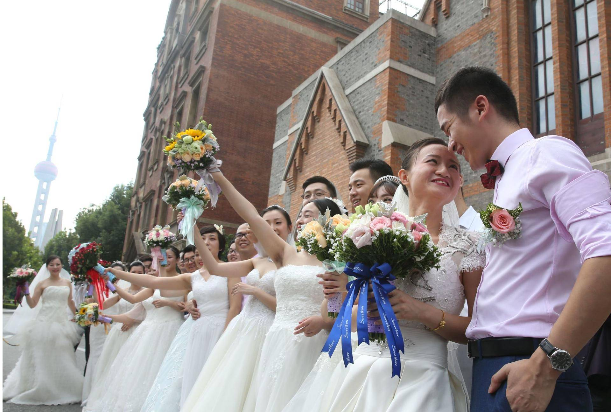

上海旅游节：跨越30年的金秋盛典
9月14日，一年一度的上海旅游节就要隆重开幕，100项主题迥异的精彩活动将纷沓而至。从1990年到2019年，上海旅游节正式迈入了它的第30个年头。在开幕之际，上观新闻记者带领大家回顾上海旅游节过往30年的精彩瞬间，并提前做足功课，看看今年又会有什么亮点。
旅游节人气经久不衰
30年来，每年都有不少中外游客在节庆期间慕名而来，体验上海的民情风俗和现代新潮。1990年的第一届旅游节就充分发挥出了上海观光、美食、购物等方面的旅游特色，推出了“黄浦新美食展”、“百种小吃一条街”、“外国朋友做一天上海市民”等项目。
在之后不断地发展和摸索中，不变的是不少活动成了旅游节的保留项目一直传承到现在，比如花车巡游、游浦江、玫瑰婚典等，变的是旅游节的服务随着科技的融入越来越细致、完善。比如2018年，“上海品质生活”APP作为旅游节的公共服务新措施上线，运用人工智能、多语种互译的手段向游客展现上海的旅游要素。
2018年玫瑰婚典在游览船上举行。活动吸引了来自上海、南京、淮安等地的新人参加。邵剑平摄
传统和现代化的融合，让旅游节的人气经久不衰。1990年的第一届旅游节吸引了40余万中外游客，而到了2001年，这个数据就翻到了580万，之后一直到2018年都在不断上升。
对外国游客而言，旅游节也是走近上海的好时机。虽然统计数据不完整，但可以看出外宾的数量同样在上涨。1990年，外宾的数量仅2000多名，而到了2007年，旅游节期间抵沪的外国旅游团数量就有3657个，以及自由行外国来宾5万余人。其中日本、法国、德国、英国游客最多，而直到现在，这几个国家的人民还依旧是中国的忠实游客。
涵盖”两节“的狂欢
一直到1997年，旅游节都只是举办一周，1998年开始长度延长到了20余天。而从2001年开始，旅游节开幕的时间都基本稳定在9月份中旬，往往会涵盖中秋节，同时随着国庆黄金周的结束而闭幕。与两节相撞，自然也给旅游节带来了更多“搞头”。
比如“唐韵中秋”自2001年以便成为了上海旅游节经典项目。在上海市区唯一的江南古典园林桂林公园内，活动以中秋节和金秋赏桂习俗为载体，弘扬中华传统节日和节事文化。游园者在中秋节夜晚，投身丹桂香溢的古典园林，赏月、饮茶、猜灯谜、做香囊，仿佛“穿越”古代，感受最真实的中秋民俗氛围。

2013年，“唐韵中秋”游园盛会在上海桂林公园上演，让中外游客充分感受传统中秋的文化韵味。 邵剑平摄

2009年，游客在中秋佳节豫园游园 刘祥摄
而国庆作为旅游黄金周被囊括在旅游节期间，使“旅游”的主题更加突出，让更多的外地游客有机会参与到这项盛事当中。
这些热闹可以好好凑
旅游节30年有什么亮点？我们对30年来关于上海旅游节的新闻报道进行了文本分析，发现这些传统项目不容错过。
“花车”一词出现的频率非常之高，这就得从旅游节每年的开幕大巡游说起。每年的旅游节开幕式及开幕大巡游，是上海旅游节拉开帷幕的重要标志。开幕大巡游是旅游节中持续时间最长、影响范围最广的节庆狂欢盛典，也是一场“移动旅游博览会”。开幕式上，来自国内外各城市及旅游景点的表演团队和花车逐一亮相，从淮海路开始在全市各区巡游展示。每年观看花车表演的市民和游客超过300万人。

2005年，上海旅游节开幕式大巡游上，花车和表演团队在淮海路上行进。张啸江摄
今年的花车也已“整装待发”。

2019年，旅游节花车抢先剧透。邵剑平摄
国际音乐烟花节也是自2000年就有的活动，但因受外环内禁放烟花爆竹规定的影响，自2016年开始暂停举办。
此外，“半价”一词出现的频率也非常高，因为在旅游节期间，不少景点和商家都会开展为期一周的门票半价优惠活动。比如2018年，东方明珠、环球金融中心、上海野生动物园甚至包括迪士尼在内的64家景点都实行半价优惠。从报导来看，半价优惠从2012年开始就有实施，想必2019年也会如约而至。
这般丰富的旅游节，大家做好凑热闹的准备了吗？